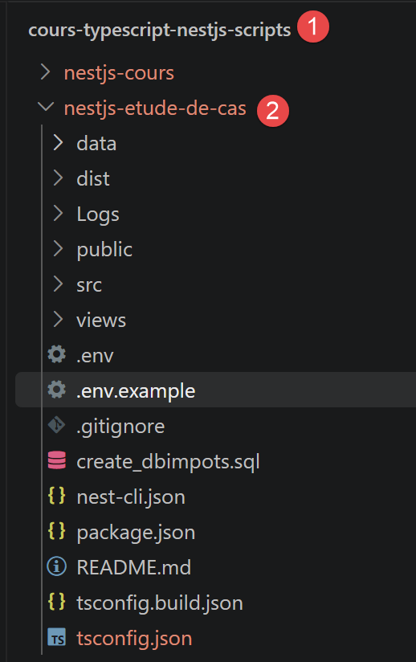
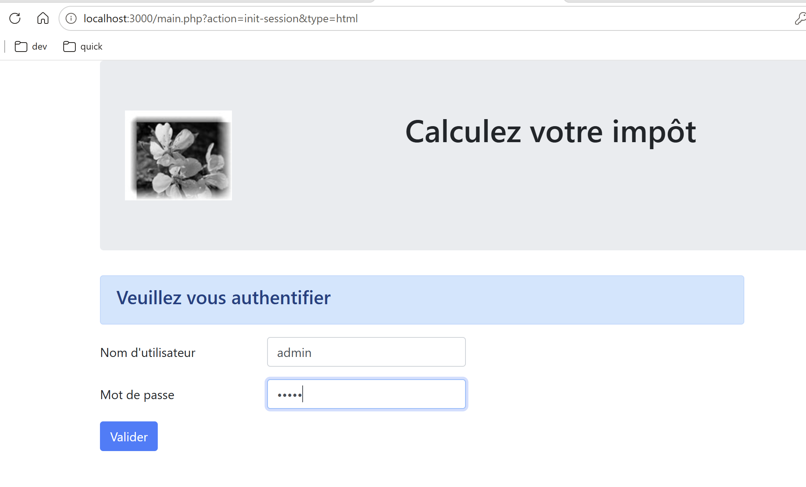
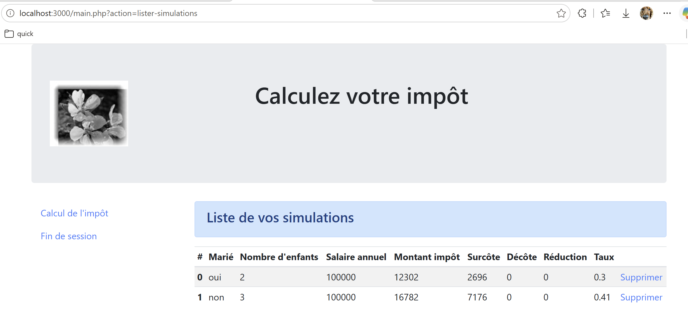
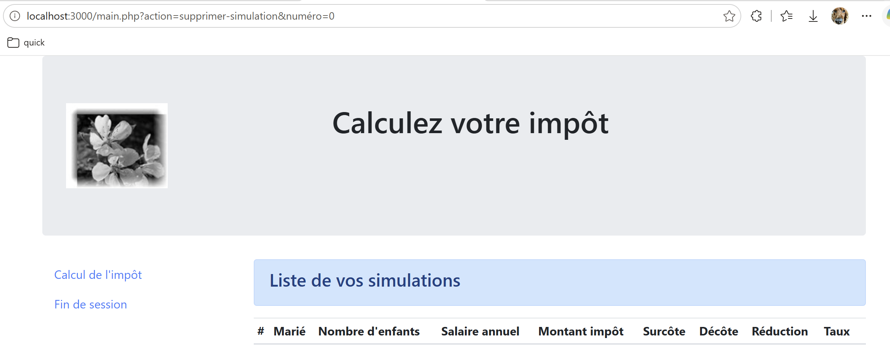
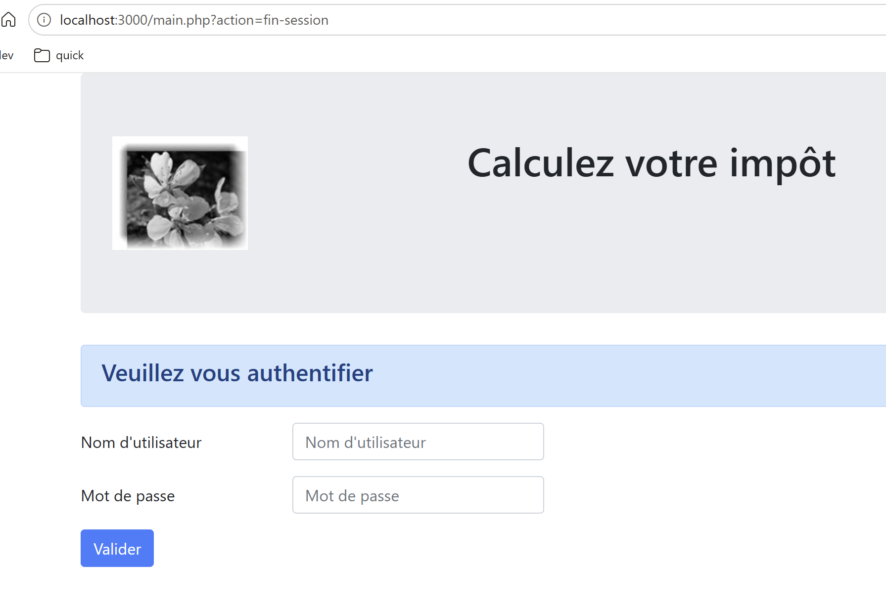

9. Étude de cas : le serveur de calcul de l'impôt en NestJS

9.1. Rappel du besoin
Le serveur à porter est un serveur PHP de calcul de l'impôt sur le revenu (voir Introduction au langage PHP7 par l’exemple ), architecturé en couches (Config / Entities / Model-Dao-Métier / Controllers / Responses / Views), avec un contrôleur frontal (main.php) qui distribue les requêtes reçues sur une seule URL (main.php?action=...) vers un contrôleur par action. L'objectif du portage était de conserver cette architecture MVC à l'identique en NestJS, action par action, code d'état par code d'état, afin de rester utilisable par le client HTML/TypeScript déjà écrit pour le serveur PHP.
9.2. L’architecture MVC reprise
La correspondance entre les deux serveurs est directe :
- Config/config.json ↔ ConfigService ;
- Entities/*.php ↔ entities/*.entity.ts (TaxAdminData, Simulation) ;
- Model/ServerDao*.php ↔ ServerDaoService (couche [DAO], chapitre 5) ;
- Model/ServerMetier.php ↔ ServerMetierService (couche [métier], portée ligne à ligne) ;
- Controllers/*Controller.php (un par action) ↔ un contrôleur d'action par classe TypeScript, choisi dynamiquement par un registre (ActionsRegistryService) ;
- Responses/*Response.php ↔ ResponseSenderService (jSON, XML) et HtmlViewRendererService (HTML) ;
- Views/*.php ↔ gabarits EJS (views/*.ejs), avec la même mise en page Bootstrap.
9.3. Organisation des fichiers du projet
Avant de détailler chaque couche, voici l'arborescence complète du projet nestjs-etude-de-cas, telle qu'obtenue après npm install (les dossiers dist/, généré par npm run build, et node_modules/ ne sont pas représentés) :
Le rôle de chaque élément :
- .env / .env.example — variables d'environnement (port, secret de session, paramètres MySQL, TAX_DATA_SOURCE...) lues par ConfigService ; .env n'est pas versionné (.gitignore), .env.example sert de modèle à copier (cp .env.example .env) ;
- .gitignore — exclut node_modules/, dist/, .env et les journaux du dépôt ;
- README.md — documentation du projet (installation, correspondance PHP ↔ NestJS, arborescence commentée) : ce chapitre en reprend et en développe le contenu ;
- create_dbimpots.sql — script de création de la base MySQL dbimpots-2019 (tables tbtranches, tbconstantes...), utilisé uniquement quand TAX_DATA_SOURCE=mysql ;
- nest-cli.json, tsconfig.json, tsconfig.build.json — configuration du CLI NestJS et du compilateur TypeScript, déjà rencontrées dans les chapitres précédents ;
- package.json — dépendances (ejs, express-session, mysql2, js2xmlparser, dotenv...) et scripts npm (start, start:dev, build) ;
- data/tax-admin-data.json — jeu de données fiscales de secours, utilisé quand TAX_DATA_SOURCE=json : pas besoin d'installer MySQL pour tester le serveur ;
- Logs/ — dossier des journaux applicatifs (logs.txt), écrit par LoggerService ; créé automatiquement au démarrage s'il n'existe pas encore ;
- public/Resources/logo.jpg — image statique, servie telle quelle par app.useStaticAssets(...) dans main.ts, utilisée par le bandeau des vues HTML ;
- views/ (à la racine du projet) — les gabarits EJS et leurs partials, détaillés plus loin dans « La construction des pages HTML » ;
- src/main.ts — point d'entrée : démarre le serveur NestJS (voir plus bas) ;
- src/app.module.ts — module racine : déclare MainController comme unique contrôleur et l'ensemble des providers de l'application ;
- src/main.controller.ts — le contrôleur frontal, déjà présenté ci-dessus ;
- src/config/ — la configuration de l'application (ConfigService), détaillée plus loin ;
- src/entities/ — les classes de données (Simulation, TaxAdminData, ExceptionImpots), détaillées plus loin ;
- src/model/ — les couches [DAO] et [métier] ;
- src/actions/ — un contrôleur par action, l'interface commune ActionController et le registre ActionsRegistryService ;
- src/responses/ — construction des réponses jSON/XML et gestion CORS (ResponseSenderService) ;
- src/views/ — attention, à ne pas confondre avec views/ à la racine : ce dossier ne contient que du TypeScript, la construction des modèles d'affichage (view-models.ts) et le choix/rendu de la vue EJS (html-view-renderer.service.ts) ;
- src/session/ — typage TypeScript de la session Express (session.types.ts) ;
- src/utilities/ — la journalisation (LoggerService) ;
- src/filters/ — dossier réservé, actuellement vide : pas encore utilisé dans cette version du projet.
Deux fichiers méritent un mot de plus, src/main.ts et src/app.module.ts, tous deux propres à ce projet (au-delà du canevas déjà vu dans les chapitres précédents). Extrait de src/main.ts :
Commentons ce code :
- ligne 4 : app.useStaticAssets(join(process.cwd(), 'public')); — sert les fichiers du dossier public/ tels quels (ici, public/Resources/logo.jpg) via une route statique, sans passer par un contrôleur NestJS ;
- ligne 6 : app.use(session({...})); — installe le middleware express-session directement sur l'application NestJS : app.use(...) fonctionne ici exactement comme sur une application Express ordinaire, NestJS étant construit au-dessus — c'est ce qui donne son sens à request.session dans MainController et dans chaque contrôleur d'action ;
- ligne 13 : const port = Number(process.env.PORT ?? 3000); — le port d'écoute, comme le reste de la configuration sensible, vient d'une variable d'environnement (fichier .env), avec 3000 comme valeur par défaut.
src/app.module.ts est le module racine (déjà rencontré dans les chapitres précédents) : il déclare MainController comme unique contrôleur, et la totalité des providers de l'application dans son tableau providers — les services (ConfigService, LoggerService, ServerDaoService, ServerMetierService, ResponseSenderService, HtmlViewRendererService, ActionsRegistryService) et les huit contrôleurs d'action, tous injectables les uns dans les autres grâce à ce même mécanisme d'injection de dépendances.
9.4. Le contrôleur frontal
Un unique contrôleur NestJS, MainController, reçoit toutes les requêtes sur /main.php?action=... (@All('main.php')) : il retrouve le paramètre action, vérifie les pré-conditions communes à toutes les actions (action connue, session initialisée, utilisateur authentifié), puis délègue au contrôleur de l'action concernée.
Extrait de src/main.controller.ts :
Commentons ce code :
- ligne 1 : [@Controller()] — ce décorateur marque la classe comme un contrôleur NestJS -- utilisé ici sans argument, il ne fixe aucun préfixe d'URL commun : c'est la route donnée plus bas, sur la méthode elle-même, qui déterminera l'URL exacte ;
- ligne 3 : [constructor(...)] — injection par constructeur de trois providers @Injectable() : le service de configuration, le service d'envoi de réponse et le registre des actions -- NestJS les instancie et les fournit automatiquement, sans qu'on ait à écrire new ConfigService() nulle part ;
- ligne 9 : [@All('main.php')] —
@Allest un décorateur de route qui associe la méthode qui suit à toutes les méthodes HTTP (GET, POST, PUT, DELETE...) sur l'URL donnée -- ici /main.php (ce nom, hérité du serveur PHP, désigne seulement un chemin d'URL en NestJS, pas un fichier PHP réellement exécuté) ; c'est ce qui permet à ce même contrôleur de traiter aussi bien les actions en lecture (GET, ex. init-session) que celles qui postent des données (POST, ex. calculer-impot), avec une seule route déclarée ; - ligne 10 : [@Req() request: Request, @Res() response: Response] — deux décorateurs de paramètre déjà rencontrés : @Req() injecte l'objet requête complet (méthode HTTP, en-têtes, query, body, session...), et @Res() injecte l'objet réponse Express, pour un contrôle total sur ce qui est renvoyé -- nécessaire ici car ce contrôleur doit, selon le cas, choisir lui-même le code d'état HTTP et le format de la réponse (jSON, XML ou HTML), ce qu'un simple return ne permettrait pas de faire aussi finement ;
- ligne 11 : [const action = String(request.query.action ?? '').toLowerCase();] — le paramètre action est lu manuellement dans request.query -- puisqu'on a choisi @Req() plutôt que le décorateur @Query('action') vu au chapitre précédent, c'est au code d'aller chercher lui-même la valeur dans l'objet requête ;
- ligne 21 : [const controller = this.actionsRegistry.get(action);] — une fois les pré-conditions vérifiées, MainController ne traite pas lui-même l'action : il retrouve, par son nom, le contrôleur d'action correspondant (voir la section suivante) et lui délègue le travail.
9.5. Un contrôleur d'action
Chaque action a son propre contrôleur, qui implémente une interface commune ActionController -- le pendant TypeScript de l'interface PHP InterfaceController. Voici, simplifié, celui de l'action [calculer-impot] :
Extrait de src/actions/calculer-impot.controller.ts :
Commentons ce code :
- ligne 1 : [@Injectable()] — premier point important à noter ici : CalculerImpotController est un provider NestJS ordinaire (@Injectable()), pas un contrôleur NestJS -- il ne porte ni @Controller(), ni aucune route (@Get, @Post...) ; c'est uniquement MainController (vu plus haut) qui est connu du routeur HTTP de NestJS ;
- ligne 2 : [export class CalculerImpotController implements ActionController] — cette classe implémente l'interface ActionController, propre à ce projet (définie dans action-controller.interface.ts), qui impose seulement une méthode execute(...) -- c'est une convention du projet, pas un mécanisme NestJS ;
- ligne 3 : [constructor(...)] — injection par constructeur de deux services : dao (couche [DAO], accès aux données fiscales) et métier (couche [métier], calcul pur) ;
- ligne 8 : [async execute(config, request, session): Promise<ActionResult>] — la méthode appelée par MainController.handle() (controller.execute(...), voir plus haut) -- ses paramètres ne sont pas des décorateurs NestJS (@Body(), @Session()...) puisque cette méthode n'est jamais appelée directement par le routeur HTTP : MainController lui passe déjà, à la main, la requête et la session qu'il a lui-même reçues via @Req() ;
- ligne 12 : [const taxAdminData = await this.dao.getTaxAdminData();] — récupère les données fiscales (tranches, plafonds) nécessaires au calcul, via la couche [DAO] présentée au chapitre précédent ;
- ligne 19 : [return { statusCode: 200, état: 300, content: { réponse: résultat }, headers: {} };] — deuxième point important : ce que renvoie execute(...) n'est pas envoyé tel quel au navigateur -- c'est la structure ActionResult propre à ce projet (statusCode, état, content, headers), relue par MainController, puis transmise à ResponseSenderService qui construit la réponse HTTP réellement envoyée (jSON, XML ou HTML selon le type de session -- voir plus bas).
Cette action se déclenche par une requête POST sur http://localhost:3000/main.php?action=calculer-impot, avec les trois paramètres marié, enfants et salaire postés dans le corps de la requête (et non dans l'URL) -- c'est d'ailleurs la première chose que vérifie execute(...), avant même de lire ces paramètres.
9.6. Les autres contrôleurs d'action
Chaque action possède son propre contrôleur, tous implémentant la même interface (le pendant TypeScript de l'interface PHP InterfaceController) — extrait de src/actions/action-controller.interface.ts :
et tous retrouvés par leur nom d'action grâce à un registre, lui-même injecté par constructeur dans MainController — extrait de src/actions/actions-registry.service.ts :
Commentons ce code :
- NestJS instancie chacun des huit contrôleurs d'action (grâce à @Injectable()) et les fournit tous, déjà construits, au constructeur de ActionsRegistryService — celui-ci se contente de les ranger dans une table associative indexée par nom d'action ;
- cette table (this.registry) joue exactement le rôle de la table [actions] de Config/config.json côté PHP, mais sans jamais instancier quoi que ce soit à la main : has(action) et get(action) sont les deux seules méthodes utilisées par MainController.
L'action [calculer-impot] a déjà été détaillée plus haut. Voici, pour chacun des sept autres contrôleurs d'action, ce qui le distingue :
- init-session.controller.ts — initialise le type de réponse en session (session.type = json, html ou xml) ; doit être la toute première action appelée (c'est la seule dispensée, par MainController, de la vérification « pas de session en cours ») ; exige la méthode GET et exactement deux paramètres de requête (action, type) ;
- authentifier-utilisateur.controller.ts — vérifie le couple login/password posté contre la liste config.users ; construit son code d'état par addition de bits d'erreur (état += 2 si user manque, état += 4 si password manque) — même logique numérique que le contrôleur PHP d'origine ;
- lister-simulations.controller.ts — le plus simple de tous : renvoie session.simulations ?? [], sans aucun calcul ;
- supprimer-simulation.controller.ts — enchaîne plusieurs vérifications (méthode/nombre de paramètres, présence du paramètre numéro, syntaxe numérique, index dans les bornes du tableau), en accumulant le code d'état bit à bit à chaque étape franchie, puis appelle simulations.splice(numéro, 1) et réenregistre le tableau en session ;
- afficher-calcul-impot.controller.ts — encore plus court que lister-simulations : ne fait strictement rien d'autre que renvoyer l'état 800, pour que le client change simplement de vue affichée (retour au formulaire de calcul) sans aucun traitement serveur ;
- admin-data.controller.ts — délègue directement à ServerDaoService.getTaxAdminData() et intercepte ExceptionImpots pour renvoyer l'état d'erreur 1041 ; avec calculer-impot, c'est l'un des deux seuls contrôleurs d'action à injecter la couche [DAO] dans son constructeur ;
Le cas de src/actions/fin-session.controller.ts mérite un examen plus détaillé, à cause d'un piège classique d'express-session :
Commentons ce code :
- ligne 9 : const type = session.type; — on mémorise le type de réponse (json/html/xml) avant de détruire la session, puisqu'il faudra le remettre dans la nouvelle ;
- ligne 10 : await new Promise<void>((resolve) => session.regenerate(() => resolve())); — point délicat de ce contrôleur : session.regenerate(callback), fourni par express-session, est une méthode à callback, pas une Promise ; on l'enveloppe donc dans une Promise pour pouvoir l'awaiter comme le reste du code ; regenerate() vide la session courante et lui attribue un tout nouvel identifiant (l'équivalent de la destruction de session Symfony) ;
- ligne 11 : request.session.type = type; — deuxième point délicat : après regenerate(), request.session pointe vers une toute nouvelle instance de session ; l'ancienne référence session, capturée dans les paramètres de execute(...) avant l'appel, est désormais orpheline — c'est pourquoi le type est réécrit sur request.session, et non sur session, sans quoi il serait silencieusement perdu.
9.7. La couche [DAO]
ServerDaoService (§5.1) fournit les données fiscales (tranches, plafonds) à la couche métier, soit depuis un fichier jSON (pratique pour tester sans base de données), soit depuis MySQL avec mysql2, au choix d'un paramètre de configuration.
Extrait de src/model/server-dao.interface.ts — un contrat minimal, une seule méthode que doit fournir toute implémentation de la couche [DAO] :
Extrait de src/model/server-dao.service.ts, l'unique implémentation de ce contrat dans ce projet :
Commentons ce code :
- async getTaxAdminData(): Promise<TaxAdminData> { if (taxDataSource === 'mysql') ... } — l'aiguillage tient en une ligne : selon config.taxDataSource (lu depuis la variable d'environnement TAX_DATA_SOURCE), on part chercher les données dans le fichier jSON ou dans MySQL, mais le contrat exposé au reste de l'application (IServerDao) ne change pas — CalculerImpotController et AdminDataController n'ont aucune idée de la source réellement utilisée ;
- getTaxAdminDataFromJson() — lit et parse data/tax-admin-data.json de façon synchrone (fs.readFileSync) ; toute erreur (fichier absent, jSON invalide) est interceptée et relevée sous la forme d'une ExceptionImpots, avec un message explicite — jamais une exception Node brute, qui remonterait mal jusqu'au client ;
- getTaxAdminDataFromMysql() — ouvre une connexion MySQL à chaque appel avec mysql2/promise (pas de pool de connexions réutilisé : cohérent avec l'absence de cache Redis signalée dans le README, chaque requête revérifie tout) ; exécute les deux requêtes SQL (tranches, puis constantes), reconstruit un TaxAdminData à partir des lignes obtenues, et referme systématiquement la connexion dans un bloc finally, que la lecture ait réussi ou non ;
- les deux méthodes privées renvoient le même type (Promise<TaxAdminData>), ce qui permet à getTaxAdminData() de rester une simple façade, sans aucune logique métier propre.
9.8. La couche [métier]
ServerMetierService ne connaît ni HTTP, ni session, ni base de données : c'est un portage ligne à ligne du calcul de l'impôt du serveur PHP, pur et testable indépendamment du reste.
Extrait de src/model/server-metier.service.ts :
- ligne 1 : [@Injectable()] — encore ce même décorateur, pour la même raison qu'ailleurs dans ce chapitre : sans lui, NestJS ne pourrait pas instancier ServerMetierService ni l'injecter dans CalculerImpotController ci-dessus ;
- ligne 2 : [export class ServerMetierService {] — à partir d'ici, en dehors de ce premier décorateur, le code n'a plus rien de spécifique à NestJS : calculerImpot(...) et getRevenuImposable(...) sont du TypeScript ordinaire, un portage ligne à ligne de l'algorithme PHP, sans HTTP ni base de données.
9.9. La configuration de l'application
src/config/config.service.ts regroupe, en un seul service NestJS, ce qui était réparti entre Config/config.json et Config/database.json côté PHP — avec la différence attendue que la configuration sensible (mots de passe, secret de session) provient désormais de variables d'environnement (fichier .env), et non d'un fichier jSON versionné :
Commentons ce code :
- actions: { ... } — cette table est conservée uniquement à titre documentaire (elle décrit fidèlement l'architecture d'origine) : le routage réel des actions ne s'appuie pas dessus, il passe par l'injection de dépendances dans ActionsRegistryService ;
- taxDataSource: (process.env.TAX_DATA_SOURCE as ...) ?? 'json' — lu depuis la variable d'environnement TAX_DATA_SOURCE, ce champ sélectionne la source des données fiscales utilisée par ServerDaoService (vue plus haut) ;
- vues: { ... } — associe à chaque nom de gabarit EJS la liste des états de réponse qui doivent l'afficher (par exemple vue-calcul-impot pour les états 200, 300, 341, 350, 800) ; c'est cette table qu'utilise HtmlViewRendererService (voir « La construction des pages HTML ») pour choisir la vue à rendre ;
- vueErreurs: 'vue-erreurs' — la vue de repli, affichée dès qu'aucune entrée de vues ne correspond à l'état courant ;
- ligne finale : if (!fs.existsSync(logsDir)) { fs.mkdirSync(logsDir, { recursive: true }); } — le service crée lui-même, dès sa construction, le dossier Logs/ s'il n'existe pas encore, afin que LoggerService puisse toujours y écrire sans jamais avoir à s'en soucier.
9.10. Les entités, la session et les journaux
src/entities/ regroupe trois classes de données, portées de Entities/*.php. Extrait de simulation.entity.ts — une simulation de calcul, mémorisée dans session.simulations :
Extrait de tax-admin-data.entity.ts — les tranches d'impôt et constantes de calcul lues par la couche [DAO] :
et exception-impots.ts — une exception applicative typée, levée par la couche [DAO] en cas de source de données inaccessible (fichier jSON illisible, connexion MySQL en échec...), et interceptée par les contrôleurs d'action qui en ont besoin (calculer-impot, get-admindata) :
src/session/session.types.ts n'est pas un service : c'est une déclaration de types qui enrichit le module express-session, pour que TypeScript connaisse le contenu propre à cette application (type de session, utilisateur authentifié, simulations enregistrées) :
Enfin, src/utilities/logger.service.ts journalise, dans Logs/logs.txt, tout ce que fait le serveur (nouvelle requête, action demandée, contrôleur choisi, réponse renvoyée...) :
9.11. Les réponses jSON, XML et HTML
ResponseSenderService construit la réponse jSON ou XML (avec la bibliothèque js2xmlparser), reproduit la gestion CORS du serveur PHP d'origine (en-têtes Access-Control-Allow-* uniquement pour une origine localhost), et gère le cas particulier de la méthode OPTIONS (préflight CORS).
Extrait de src/responses/response-sender.service.ts, qui construit effectivement cette réponse :
Commentons ce code :
- switch (type) { ... } — les trois formats de réponse sont construits ici, et ici seulement : json par JSON.stringify, xml par la bibliothèque js2xmlparser (qui transforme l'objet content en document XML, racine <root>), et html en délégant entièrement à HtmlViewRendererService.render(...), détaillé plus loin ;
- this.logger.write(
réponse=${JSON.stringify(content)}); — en mode HTML aussi, c'est le contenu applicatif de la réponse (content) qui est journalisé, jamais la page HTML entière produite — comme le faisait HtmlResponse.php ; - dans sendResponse(...), la vérification origin.startsWith('http://localhost') || origin.startsWith('https://localhost') reproduit à l'identique la politique CORS du serveur PHP d'origine (ParentResponse::sendResponse) : seules les origines localhost reçoivent les en-têtes Access-Control-Allow-*, jamais un domaine arbitraire ;
- if (method === 'options') { content = ''; statusCode = 200; } — cas particulier du preflight CORS : pour une requête OPTIONS, seuls les en-têtes comptent, le corps de la réponse est vidé et le code d'état forcé à 200, quel que soit le traitement demandé.
Pour le mode type=html, HtmlViewRendererService reproduit la logique de sélection de vue du serveur PHP : à un état de réponse correspond une vue, choisie dans une table de configuration, avec repli sur une page d'erreurs générique si aucune vue ne correspond. Chaque vue est un gabarit EJS (views/*.ejs), traduction directe des fichiers PHP d'origine, alimenté par un « modèle d'affichage » construit par une fonction dédiée -- le même principe que le couple getModelForThisView(...) / vue PHP, avec l'échappement automatique des valeurs affichées en plus.
9.12. La construction des pages HTML
Revenons en détail sur le mode type=html, dont le mécanisme se décompose en trois fichiers bien séparés : la sélection et le rendu de la vue (src/views/html-view-renderer.service.ts), la construction du « modèle d'affichage » propre à chaque vue (src/views/view-models.ts), et les gabarits eux-mêmes (views/*.ejs et views/partials/*.ejs, à la racine du projet — à ne pas confondre avec le dossier src/views/, qui, lui, ne contient que du TypeScript).
Extrait de src/views/html-view-renderer.service.ts :
Commentons ce code :
- const nomVue = Object.keys(vues).find((vue) => vues[vue].includes(état)) ?? vueErreurs; — la ligne clé de tout le mécanisme : on cherche, dans la table config.vues (vue plus haut), le nom de la vue dont la liste d'états contient l'état courant de la réponse ; si aucune ne correspond — y compris, souligne le README, un état de succès sans vue dédiée comme get-admindata/1000 — on retombe sur vueErreurs (vue-erreurs), exactement la logique de HtmlResponse::send() côté PHP ;
- const logo = buildLogoPath(request); — le chemin du logo est recalculé à chaque requête à partir de l'URL demandée (voir view-models.ts ci-dessous), pour rester correct même si l'application est déployée dans un sous-répertoire ;
- switch (nomVue) { case 'vue-authentification': modèle = buildAuthentificationModel(...); ... } — une fois la vue choisie, on appelle la fonction de construction de modèle qui lui correspond (détaillées ci-dessous) ; c'est ce modèle, et lui seul, que le gabarit EJS va afficher ;
- return ejs.renderFile(templateFile, { modèle, logo }, { views: [viewsDir, path.join(viewsDir, 'partials')] }); — l'appel EJS proprement dit : ejs.renderFile(...) lit le fichier .ejs correspondant, l'exécute avec les variables modèle et logo dans son contexte, et renvoie le HTML obtenu sous forme de chaîne de caractères — l'option views donne à EJS les deux répertoires où chercher un gabarit inclus par son nom (le dossier des vues, et son sous-dossier partials/).
src/views/view-models.ts définit une fonction de construction de modèle par vue — l'équivalent TypeScript de la fonction getModelForThisView(...) présente dans chacune des vues PHP d'origine (Views/vue-*.php). Extrait, le plus simple des quatre, buildAuthentificationModel :
et le plus riche, buildCalculImpotModel, qui doit gérer trois cas bien distincts :
Commentons ce code :
- états 200 et 800 (formulaire vide, arrivée sur la vue ou retour depuis afficher-calcul-impot) — tous les champs du modèle repartent à vide, comme un formulaire jamais rempli ;
- état 300 (calcul réussi) — const réponse = content.réponse as Record<string, unknown>; récupère le résultat renvoyé par CalculerImpotController (impôt, décôte, réduction, surcôte, taux) et construit les cinq phrases affichées dans le bandeau de succès ; le formulaire est re-rempli avec les valeurs postées (request.body), pour que l'utilisateur revoie sa saisie à côté du résultat ;
- états 341 et 350 (base de données — ou Redis — hors service) — même ré-affichage du formulaire posté, mais avec modèle.error = true et le message d'erreur renvoyé par la couche [DAO] placé dans modèle.erreurs ;
- optionsMenu: { ... } — le menu latéral (partiel menu.ejs, voir plus bas) est indépendant de l'état : il est toujours présent, avec les deux mêmes options, quel que soit le résultat du calcul.
Les deux fonctions restantes suivent le même principe :
- buildListeSimulationsModel(content) — la plus courte des quatre : simulations: (content.réponse as SimulationRow[]) ?? [], complétée du même menu latéral que buildCalculImpotModel (avec cette fois « Calcul de l'impôt » et Fin de session) ;
- buildErreursModel(content) — construit la liste des messages affichés par la vue générique vue-erreurs ; gère un cas très particulier hérité du PHP d'origine : else if (réponse !== null && typeof réponse === 'object') { erreurs = [JSON.stringify(réponse)]; }, pour le cas où un état de succès sans vue dédiée (comme get-admindata/1000) retombe malgré tout sur cette vue d'erreurs — le PHP d'origine affichait alors l'objet via sa méthode __toString() ; JSON.stringify en est l'équivalent TypeScript ;
- buildLogoPath(request) — const root = pathname.replace(/\/[^/]*$/, ''); return
${root}/Resources/logo.jpg; : reconstruit le chemin du logo à partir du répertoire de l'URL courante (sans le nom du script), pour que le bandeau reste correct même si l'application est déployée dans un sous-répertoire — portage direct de Views/v-bandeau.php.
Les quatre gabarits views/*.ejs sont des traductions directes des fichiers PHP d'origine (Views/vue-*.php), avec la même mise en page Bootstrap 4.1.3. Extrait, le plus complet, vue-calcul-impot.ejs :
Commentons ce gabarit :
- ligne 1 : <%# ... %> — un commentaire EJS, jamais envoyé au navigateur ;
- <%- include('partials/bandeau', { logo: logo }) %> — inclusion d'un gabarit partiel, avec les variables qu'on souhaite lui transmettre explicitement (ici logo) ; à noter : <%- %> affiche le résultat sans l'échapper — utilisé ici uniquement pour insérer du HTML déjà construit par include(...), jamais pour une donnée saisie par l'utilisateur ;
- <% if (modèle.success) { %> ... <% } %> — bloc de contrôle EJS (<% %>, sans tiret) : du JavaScript exécuté pendant le rendu, qui ne produit lui-même aucune sortie ; ici, la section « résultat » n'apparaît dans le HTML final que si modèle.success est vrai ;
- <%= modèle.impôt %> — affichage échappé (<%= %>, avec le signe égal) : c'est la forme utilisée pour toute donnée qui peut contenir la saisie d'un utilisateur (résultats du calcul, login réaffiché, messages d'erreur) — EJS échappe automatiquement les caractères spéciaux HTML, contrairement au <?= ?> du PHP d'origine, qui ne le faisait pas.
Les trois autres vues et les cinq partiels (views/partials/) suivent les mêmes principes :
- vue-authentification.ejs — le formulaire de connexion ; inclut partials/bandeau et partials/authentification-form, puis affiche la liste modèle.erreurs si modèle.error ;
- vue-liste-simulations.ejs — inclut partials/bandeau, partials/menu et partials/liste-simulations-table ;
- vue-erreurs.ejs — la vue de repli : partials/bandeau, partials/menu, puis une simple boucle <% modèle.erreurs.forEach(function(erreur) { %><li><%= erreur %></li><% }) %> ;
- partials/bandeau.ejs — le logo et le titre Calculez votre impôt, communs à toutes les vues sauf vue-authentification qui, elle, l'inclut aussi ;
- partials/menu.ejs — <% Object.keys(modèle.optionsMenu).forEach(function(texte) { %><a href="<%= modèle.optionsMenu[texte] %>"><%= texte %></a><% }) %> : le menu latéral, entièrement piloté par la table optionsMenu construite dans view-models.ts — ajouter une option de menu ne demande donc de changer que le modèle, jamais ce gabarit ;
- partials/authentification-form.ejs — le formulaire de connexion Bootstrap, avec value="<%= modèle.login %>" pour réafficher le dernier login saisi en cas d'échec ;
- partials/calcul-impot-form.ejs — le formulaire de calcul ; à noter <%- modèle.checkedOui ? 'checked="checked"' : '' %> : un <%- %> volontaire et sans risque, puisque la chaîne insérée (checked="checked" ou vide) est fixée côté serveur, jamais construite à partir d'une saisie utilisateur ;
- partials/liste-simulations-table.ejs — le tableau des simulations, une ligne par élément de modèle.simulations, avec un lien Supprimer vers main.php?action=supprimer-simulation&numéro=... pour chaque ligne.
9.13. Exécution
A la racine du dossier [nestjs-etude-de-cas] :
Le serveur écoute alors sur http://localhost:3000. Le mode jSON, utilisé par le client TypeScript, se teste avec :
et le mode HTML, directement au navigateur, avec :
Dans les deux cas, c'est le même paramètre action qui choisit le traitement effectué (ici, init-session, qui doit être la toute première action appelée puisqu'elle initialise la session) et le paramètre type qui choisit le format de la réponse -- les autres actions se testent de la même façon, en changeant simplement la valeur de action (par exemple &action=calculer-impot, en POST, avec les paramètres marié, enfants et salaire postés).
Ouvrez un navigateur et demandez l’URL [http://localhost:3000/main.php?action=init-session&type=html]

Les identifiants sont admin / admin. Validez le formulaire.

Remplissez le formulaire puis validez-le :
Faites plusieurs simulations, puis demandez la [Liste des simulations] :

Supprimez les deux simulations :

Terminez la session :
